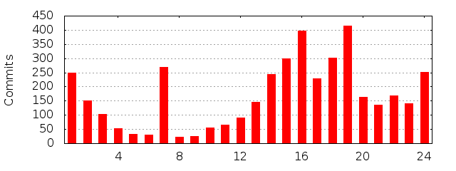

Activity
Last 32 weeks
| 51 | 90 | 23 | 74 | 53 | 12 | 10 | 4 | 1 | 0 | 8 | 0 | 0 | 0 | 0 | 2 | 0 | 3 | 2 | 1 | 3 | 1 | 2 | 2 | 0 | 0 | 0 | 3 | 2 | 3 | 0 | 2 |
| 32 | 31 | 30 | 29 | 28 | 27 | 26 | 25 | 24 | 23 | 22 | 21 | 20 | 19 | 18 | 17 | 16 | 15 | 14 | 13 | 12 | 11 | 10 | 9 | 8 | 7 | 6 | 5 | 4 | 3 | 2 | 1 |
| Hour | 0 | 1 | 2 | 3 | 4 | 5 | 6 | 7 | 8 | 9 | 10 | 11 | 12 | 13 | 14 | 15 | 16 | 17 | 18 | 19 | 20 | 21 | 22 | 23 |
|---|
| Commits | 248 | 152 | 103 | 53 | 32 | 29 | 270 | 22 | 24 | 56 | 66 | 90 | 145 | 243 | 298 | 396 | 229 | 301 | 414 | 164 | 135 | 169 | 141 | 251 |
|---|
| % | 6.15 | 3.77 | 2.56 | 1.31 | 0.79 | 0.72 | 6.70 | 0.55 | 0.60 | 1.39 | 1.64 | 2.23 | 3.60 | 6.03 | 7.39 | 9.82 | 5.68 | 7.47 | 10.27 | 4.07 | 3.35 | 4.19 | 3.50 | 6.23 |
|---|

| Day | Total (%) |
|---|
| Mon | 476 (11.81%) |
|---|
| Tue | 824 (20.44%) |
|---|
| Wed | 412 (10.22%) |
|---|
| Thu | 991 (24.58%) |
|---|
| Fri | 492 (12.21%) |
|---|
| Sat | 286 (7.10%) |
|---|
| Sun | 550 (13.64%) |
|---|
| Weekday | 0 | 1 | 2 | 3 | 4 | 5 | 6 | 7 | 8 | 9 | 10 | 11 | 12 | 13 | 14 | 15 | 16 | 17 | 18 | 19 | 20 | 21 | 22 | 23 |
|---|
| Mon | 2 | 69 | 10 | 4 | 2 | 1 | 10 | 9 | 4 | 10 | 15 | 17 | 20 | 16 | 21 | 30 | 22 | 68 | 32 | 30 | 29 | 18 | 16 | 21 |
|---|
| Tue | 17 | 12 | 44 | 22 | 4 | 7 | 11 | 4 | 4 | 7 | 5 | 13 | 18 | 33 | 38 | 186 | 32 | 88 | 33 | 33 | 24 | 96 | 27 | 66 |
|---|
| Wed | 13 | 8 | 8 | 7 | 6 | 2 | 2 | 2 | 5 | 14 | 9 | 17 | 19 | 17 | 17 | 19 | 34 | 44 | 49 | 23 | 15 | 26 | 29 | 27 |
|---|
| Thu | 81 | 42 | 21 | 3 | 1 | 5 | 236 | | 6 | 5 | 12 | 22 | 45 | 28 | 39 | 21 | 34 | 42 | 174 | 17 | 36 | 18 | 20 | 83 |
|---|
| Fri | 9 | 11 | 12 | 6 | 12 | 2 | 6 | 3 | 5 | 14 | 11 | 14 | 37 | 23 | 36 | 34 | 34 | 51 | 115 | 22 | 5 | 2 | 15 | 13 |
|---|
| Sat | 115 | 4 | 2 | 11 | 2 | 8 | 2 | 4 | | 4 | 3 | 3 | 5 | 4 | 6 | 1 | 2 | 6 | 4 | 33 | 18 | 5 | 17 | 27 |
|---|
| Sun | 11 | 6 | 6 | | 5 | 4 | 3 | | | 2 | 11 | 4 | 1 | 122 | 141 | 105 | 71 | 2 | 7 | 6 | 8 | 4 | 17 | 14 |
|---|
| Month | Commits (%) |
|---|
| 1 | 148 (3.67 %) |
| 2 | 366 (9.08 %) |
| 3 | 609 (15.11 %) |
| 4 | 683 (16.94 %) |
| 5 | 433 (10.74 %) |
| 6 | 459 (11.39 %) |
| 7 | 201 (4.99 %) |
| 8 | 160 (3.97 %) |
| 9 | 281 (6.97 %) |
| 10 | 227 (5.63 %) |
| 11 | 174 (4.32 %) |
| 12 | 290 (7.19 %) |
| Month | Commits | Lines added | Lines removed |
|---|
| 2012-10 | 5 | 68 | 7 |
| 2012-09 | 5 | 0 | 0 |
| 2012-08 | 8 | 0 | 0 |
| 2012-07 | 6 | 0 | 0 |
| 2012-06 | 2 | 0 | 0 |
| 2012-05 | 13 | 0 | 0 |
| 2012-04 | 149 | 0 | 0 |
| 2012-03 | 479 | 0 | 0 |
| 2012-02 | 207 | 254 | 23 |
| 2012-01 | 48 | 0 | 0 |
| 2011-12 | 191 | 0 | 0 |
| 2011-11 | 126 | 38 | 1 |
| 2011-10 | 78 | 0 | 0 |
| 2011-09 | 72 | 0 | 0 |
| 2011-08 | 88 | 0 | 0 |
| 2011-07 | 41 | 0 | 0 |
| 2011-06 | 202 | 478 | 220 |
| 2011-05 | 218 | 2328 | 1424 |
| 2011-04 | 85 | 3795 | 2602 |
| 2011-03 | 20 | 9960 | 2328 |
| 2011-02 | 26 | 1540 | 696 |
| 2011-01 | 36 | 2069 | 1308 |
| 2010-12 | 72 | 1092 | 599 |
| 2010-11 | 27 | 663 | 309 |
| 2010-10 | 44 | 1779 | 1275 |
| 2010-09 | 13 | 229 | 102 |
| 2010-08 | 40 | 2412 | 1255 |
| 2010-07 | 121 | 3857 | 2790 |
| 2010-06 | 101 | 1201 | 588 |
| 2010-05 | 129 | 827 | 305 |
| 2010-04 | 363 | 412 | 340 |
| 2010-03 | 16 | 17 | 82 |
| 2010-02 | 115 | 1210 | 1371 |
| 2010-01 | 26 | 96 | 38 |
| 2009-12 | 27 | 549 | 56 |
| 2009-11 | 21 | 244 | 260 |
| 2009-10 | 100 | 1295 | 623 |
| 2009-09 | 191 | 1290 | 883 |
| 2009-08 | 24 | 66 | 5 |
| 2009-07 | 33 | 0 | 0 |
| 2009-06 | 154 | 168 | 213 |
| 2009-05 | 73 | 1092 | 243 |
| 2009-04 | 86 | 2509 | 148 |
| 2009-03 | 94 | 538 | 195 |
| 2009-02 | 18 | 121 | 22 |
| 2009-01 | 38 | 15 | 27 |
| Year | Commits (% of all) | Lines added | Lines removed |
|---|
| 2012 | 922 (22.87%) | 322 | 30 |
| 2011 | 1183 (29.35%) | 20208 | 8579 |
| 2010 | 1067 (26.47%) | 13795 | 9054 |
| 2009 | 859 (21.31%) | 7887 | 2675 |
| Timezone | Commits |
|---|
| -0800 | 324 |
|---|
| -0700 | 1052 |
|---|
| -0600 | 1608 |
|---|
| -0500 | 496 |
|---|
| -0400 | 293 |
|---|
| -0300 | 2 |
|---|
| +0000 | 16 |
|---|
| +0100 | 102 |
|---|
| +0200 | 118 |
|---|
| +0300 | 4 |
|---|
| +0400 | 3 |
|---|
| +1000 | 1 |
|---|
| +1200 | 4 |
|---|
| +1300 | 8 |
|---|